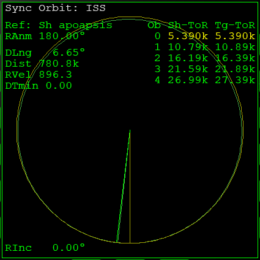

Part5 ISSとのランデブー
ISSに接近して、相対速度を一致させます。
最後の1周
Sync Orbit MFDを開いておく。
最後の1周になるまで時間経過させる。
1000倍程度のタイムワープを使う。
接近中はDTminの数字を確認する。
必要があればApでエンジンを噴射して、DTminをゼロにする。
黄色で表示された行がリストの1番上に来たら、最後の1周になったということ。

Docking MFD
SELをクリック。
Docking MFDを開く。
信号が受信できていれば、距離などの情報が表示される。
| DST | Distance | ターゲットまでの距離 |
| CVEL | Closing Velocity | ターゲットに接近する速度 |
接近する
DSTが10kmになるまで接近を続ける。
100倍程度のタイムワープを使って早送りする。
CVELのグラフが黄色なら、ISSに近づいている。
緑なら遠ざかっていることになる。
一時的に遠ざかってから、ふたたび接近することがある。
Sync Orbit MFDで最接近するタイミングを確認しておくこと。
ドッキングポートへの経路
HUDをクリック。
自動的にDocking HUDに切り替わる。
NAVをクリック。
NAV2（ドッキングポート）に切り替える。
もう一度HUDをクリック。
一列に並んだ長方形の枠がHUD上に現れる。
信号が受信できないとき
TGTをクリックすると、直接ドッキングポートなどをターゲットできる。
ランデブーする相手によっては、トランスポンダーの周波数が設定されていないことがある。
このようなときは、TGTをクリックしてターゲットを設定する。
ランデブー
メインエンジンを噴射して、ISSとの相対速度をゼロにする。
相対速度マーカー
Docking HUDには、ISSとの相対速度を表すマーカーが表示されている。
\( \bigodot \) のマーカーに機首を向ける。
RCS ROTにして、機体を手動で回転させる。
| テンキー | |
| 2 or 8 | ピッチ |
| 4 or 6 | ロール |
| 1 or 3 | ヨー |
| 5 | 回転を止める |
| / | RCS MODE切り替え |
Docking HUD中央の×に、マーカーの中心が完全に重なるようにする。
マーカーが視界外にあるときは、ProGradeオートパイロットを実行する。
最接近時には、ProGradeの方向にマーカーが移動する。
マーカーを確認したらProGradeを解除して、手動で操作する。
相対速度をゼロにする
数km以内まで接近するのを待つ。
機首をマーカーの中心に向けておく。
メインエンジンを噴射する。
相対速度がゼロになったら噴射を止める。
相対速度は-V[ISS]の横に表示されている。
解説
宇宙船の速度は、Peでは速く、Apでは遅くなる。
PeとApの高度差が大きければ大きいほど、速度の違いは大きくなる。
このチュートリアルでは、宇宙船のApでランデブーしている。
したがって、ランデブー地点に近づくにつれて、宇宙船の速度は遅くなる。
ISSはPeとApの差が小さい軌道にいるので、同じ高度であればISSのほうが高速になる。
宇宙船の進行方向に機首を向けて加速することで、この速度差を埋めることができる。
自分が高い軌道にいて、低い軌道の相手とランデブーするときは、これらの関係が逆になる。
いずれの場合も、 \( \bigodot \) のマーカーに機首を向けて、メインエンジンを噴射する。